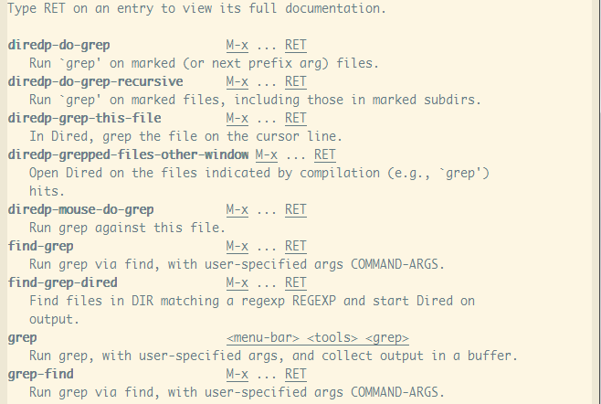
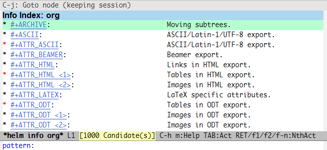
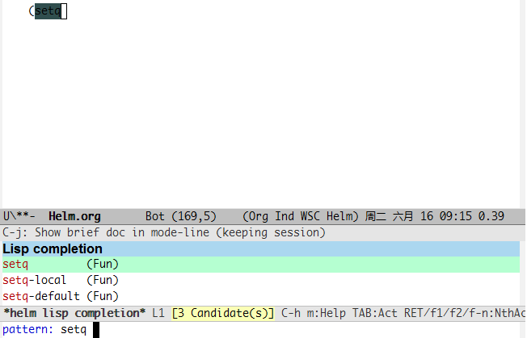
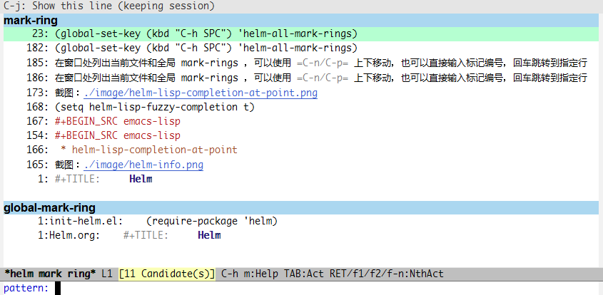
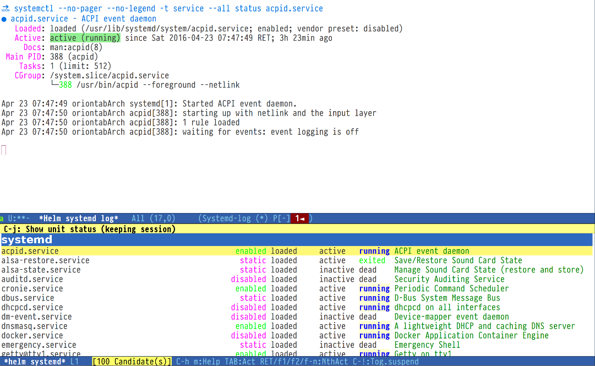

Helm 工具包
Table of Contents
- 1. 基本使用
- 2. 命令 Command
- 2.1. helm-M-x
- 2.2. helm-show-kill-ring
- 2.3. helm-mini
- 2.4. helm-ff-do-grep
- 2.5. helm-semantic-or-imenu
- 2.6. helm-man-woman
- 2.7. helm-find
- 2.8. helm-locate
- 2.9. helm-occur
- 2.10. helm-apropos
- 2.11. helm-info-*
- 2.12. helm-lisp-completion-at-point
- 2.13. helm-resume
- 2.14. helm-all-mark-rings
- 2.15. helm-regexp
- 2.16. helm-register
- 2.17. helm-eval-expression-with-eldoc
- 2.18. helm-top
- 2.19. helm-surfraw
- 2.20. helm-google-suggest
- 2.21. helm-color
- 2.22. helm-calcul-expression
- 2.23. helm-eshell-history
- 2.24. helm-systemd
本文所有 gif 图片来自 http://tuhdo.github.io/helm-intro.html
我的设置 init-helm.el
(require-package 'helm) (require 'helm) (require 'helm-config) ;(require 'helm-dash) (helm-mode 1) (helm-autoresize-mode 1) ;(setq helm-ff-auto-update-initial-value nil) ; 禁止自动补全 (global-set-key (kbd "M-x") 'helm-M-x) (global-set-key (kbd "M-y") 'helm-show-kill-ring) (global-set-key (kbd "C-c h") 'helm-command-prefix) (global-set-key (kbd "C-x b") 'helm-mini) (global-set-key (kbd "C-x C-f") 'helm-find-files) (global-set-key (kbd "C-s") 'helm-occur) (global-set-key (kbd "C-h SPC") 'helm-all-mark-rings) (setq helm-split-window-in-side-p t helm-move-to-line-cycle-in-source t helm-ff-search-library-in-sexp t helm-M-x-fuzzy-match t ; 模糊搜索 helm-buffers-fuzzy-matching t helm-locate-fuzzy-match t helm-recentf-fuzzy-match t helm-scroll-amount 8 helm-ff-file-name-history-use-recentf t) (provide 'init-helm)
1 基本使用
C-h f 相当于 describle-function，列出所有函数
C-h v 相当于 describle-variable，列出所有变量
C-h w 相当于 where-is，列出所有键绑定
.....
在 minibuffer 下
C-s 相当于 grep，可模糊/正则搜索，helm-ff-run-grep
C-n/C-p 移动光标
C-v/M-v 快速移动
C-k 回到根目录，清空原先的内容
C-l 返回上一级
C-c C-i 将选中的文件绝对插入缓冲区
C-t Helm.org
C-x @ 用 root 打开文件
C-c h 切换到文件打开历史列表
M-p 切换到其他目录
M-a 选择所有，可与 C-c C-i 配合使用
本来还有 C-SPC 标记一个，但与中文输入法冲突……
M-D 删除选中的文件
M-R 重命名选定文件
M-C 复制选定文件
M-S 选定文件建立软连接
M-H 选定文件建立硬链接
简单演示：

1.首先键入 main.c ，出现众多候选。我只想要在 x86 目录下的 main.c ，所以再次键入 x86 。完整的过程即键入 main.c x86 ，Helm 自动搜索到正确的候选 arch/x86/boot/main.c 。
2.模糊搜索。比如路径是 driver/edac/i5100_edac.c 的文件，键入 dedi51 ： d 表示 driver ， ed 表示 edac ， i51 表示 i5100_edac.c 。
2 命令 Command
2.1 helm-M-x
(global-set-key (kbd "M-x") 'helm-M-x)
(setq helm-M-x-fuzzy-match t)
helm-M-x 代替 M-x 命令，多出一个候选列表，且可以进行模糊搜索。
演示：

2.2 helm-show-kill-ring
(global-set-key (kbd "M-y") 'helm-show-kill-ring)
helm-show-kill-ring 代替默认的 M-y ，可以在 emacs 剪切和复制的内容列表中选择/搜索。
演示：

2.3 helm-mini
(global-set-key (kbd "C-x b") 'helm-mini)
(setq helm-buffers-fuzzy-matching t
helm-recentf-fuzzy-match t)
helm-mini 代替默认的 C-x b ，显示缓冲区列表，可搜索，完全可以代替默认的缓冲区列表命令，即 C-x b/C-x C-b。
演示：

2.4 helm-ff-do-grep
也可以用 ack-grep 代替 grep
(when (executable-find "ack-grep") (setq helm-grep-default-command "ack-grep -Hn --no-group --no-color %e %p %f" helm-grep-default-recurse-command "ack-grep -H --no-group --no-color %e %p %f"))
在 helm-find-files 的 minibuffer 中，键入 C-s 即可进入。
演示：

2.5 helm-semantic-or-imenu
(setq helm-semantic-fuzzy-match t
helm-imenu-fuzzy-match t)
键入 C-c h i 进入，列出当前文件章节/节点列表，选择后跳转到指定章节/节点。
演示：

2.6 helm-man-woman
(add-to-list 'helm-sources-using-default-as-input 'helm-source-man-pages)
快速调整到指定 man 文档，需自己手工设置快捷键。
演示：

2.7 helm-find
C-c h / 默认情况下只搜索当前目录， C-u C-c h / 可指定要搜索的目录。
在 helm-find-files （即 C-x C-f ）窗口中键入 C-c / 同样可以调用该命令。
演示：

2.8 helm-locate
(setq helm-locate-fuzzy-match t) ; 仅供 Linux 平台下设置
C-c h l 启动， C-! 暂停/继续进行实时搜索，大硬盘搜索迟缓时可用。
类似 helm-find，但进行全局搜索。Mac OS 下 需要用到 mdfind ，Windows 下需要安装 Everthing search engine 并添加 es.exe 环境变量。
演示：

2.9 helm-occur
(global-set-key (kbd "C-s") 'helm-occur)
文件全文搜索，个人感觉完全可以代替 Emacs 默认搜索命令，按 TAB 显示扩展命令，同时可以按 C-j 临时跳转到某个搜索结果。
注意：搜索关键词之间加空格可以模糊搜索，比如键入“h l”，搜索结果中会有“helm”。
功能类似的还有 Helm-swoop，地址：https://github.com/ShingoFukuyama/helm-swoop
演示：

2.10 helm-apropos
(setq helm-apropos-fuzzy-match t)
显示 Emacs 指定命令简述(包括可用函数、变量、属性、功能等等)，可模糊/正则搜索。
截图：

2.11 helm-info-*
helm emacs info 帮助系统，提供搜索/补全功能，键入 M-x helm-info 可以看到所有可选择的列表。
截图：

2.12 helm-lisp-completion-at-point
(setq helm-lisp-fuzzy-completion t)
提供 lisp 命令补全/候选，使用该命令之前必须先键入几个 lisp 关键词，哪怕是一个括号。
截图：

2.13 helm-resume
用于回复以前的缓冲区，且恢复那个缓冲区已有的输入，哪怕你没有保存。
键入 C-c h b 启动。
2.14 helm-all-mark-rings
(global-set-key (kbd "C-h SPC") 'helm-all-mark-rings)
在窗口处列出当前文件和全局 mark-rings ，可以使用 C-n/C-p 上下移动，也可以直接输入标记编号，回车跳转到指定行。
截图：

2.15 helm-regexp
实时显示某个正则表达式效果，测试时可用。
F1 保存正则表达式作为一个 kill-ring F2 替换当前正则表达式 F3 保存正则表达式作为当前提示
演示：

2.16 helm-register
(global-set-key (kbd "C-c h x") 'helm-register)
查看并列出所有 Emacs 寄存器（emacs register）。
演示：

2.17 helm-eval-expression-with-eldoc
在该命令下输入的 Emacs Lisp 表达式其结果可以马上在缓冲区中表现出来。如果你有一个命令希望马上看到效果，该命令会有很大帮助。
演示：

2.18 helm-top
类似 Linux top 命令。
| Key | 用途 |
|---|---|
| C-c C-u | 刷新 |
| M-C | 按照 Shell command 排序 |
| M-P | 按照 CPU 使用率排序 |
| M-U | 按照用户名称排序 |
| M-M | 按照内存占用排序 |
演示：

2.19 helm-surfraw
一个快速搜索命令，包含多个搜索引擎，会跳转到浏览器。
演示：

2.20 helm-google-suggest
(global-set-key (kbd "C-c h g") 'helm-google-suggest)
交互式输入检索词，并得到 helm 来自 google 的结果，当然可以用于其他服务，诸如：Google Maps、Google News、Youtube、Wikipedia 等等。
演示：

2.21 helm-color
用于查看/复制颜色的十六进制值。
| Key | 用途 |
|---|---|
| [f1] or C-c N | 复制名称 |
| [f2] or C-c R | 复制 RGB |
| [f3] or C-c n | 插入名称 |
| [f4] or C-c r | 插入 RGB |
演示：

2.22 helm-calcul-expression
一个相当于计算器（calc）命令，可以使用符号诸如：+、-、*、/、sin、cos、tan、sqrt 等等。
演示：

2.23 helm-eshell-history
(require 'helm-eshell) (add-hook 'eshell-mode-hook #'(lambda () (define-key eshell-mode-map (kbd "C-c C-l") 'helm-eshell-history)))
查看 eshell 命令历史。
演示：

2.24 helm-systemd
使用 Helm 控制 Linux systemd 服务。软件包地址：https://github.com/lompik/helm-systemd
